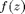
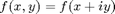
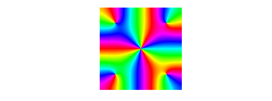

CHEBFUN2 GUIDE 4: COMPLEX-VALUED CHEBFUN2 OBJECTS
A. Townsend, March 2013
Contents
4.1 ANALYTIC FUNCTIONS
An analytic function  can be thought of as a complex valued function of two real variables . If the Chebfun2 constructor is given an anonymous function with one argument, it assumes that argument is a complex variable. For instance,
f = chebfun2(@(z) sin(z)); f(1+1i), sin(1+1i)
ans = 1.298457581415977 + 0.634963914784736i ans = 1.298457581415977 + 0.634963914784736i
These functions can be visualised by using a technique known as phase portrait plots. Given a complex number , the phase can be represented by a colour. We follow Wegert's colour recommendations [Wegert 2012]. Using red for a phase , then yellow, green, blue, and violet as the phase moves clockwise around the unit circle. For example,
f = chebfun2(@(z) sin(z)-sinh(z),2*pi*[-1 1 -1 1]); plot(f)
Many properties of analytic functions can be visualised by these types of plots [Wegert 2012] such as the location of zeros and their multiplicities. Can you work out the multiplicity of the root at z=0 from this plot?
At present, since Chebfun2 only represents smooth functions, a trick is required to draw pictures like these for functions with poles [Trefethen 2013]. For functions with branch points or essential singularities, it is currently not possible in Chebfun2 to draw phase plots.
4.2 FURTHER WORK
Complex-valued chebfun2 objects are a relatively recent feature of Chebfun2 and this chapter of the guide will be extended when new functionality is added. There are also many different styles for phase portraits and to find Matlab code to produce lots of them see http://www.visual.wegert.com
4.3 REFERENCES
[Trefethen 2013] L. N. Trefethen, Phase Portraits for functions with poles, http://www2.maths.ox.ac.uk/chebfun/examples/complex/html/PortraitsWithPoles.shtml
[Wegert 2012] E. Wegert, Visual Complex Functions: An Introduction with Phase Portraits, Springer Basel, 2012